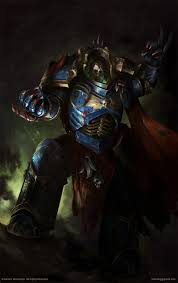

Konrad Curze
Konrad Curze, o "Night Haunter" (Assombrado da Noite), é o Primarca da VIII Legião, os Night Lords. Ele é, sem dúvida, a figura mais sombria e trágica entre os Primarcas, representando o medo e a justiça punitiva levada ao extremo absoluto. Ao contrário de seus irmãos, Curze não foi um herói para seu povo, mas um monstro que os obrigou a serem bons através do terror.
Quem é Konrad Curze?
Curze aterrissou em Nostramo, um mundo mergulhado em escuridão perpétua, poluição e crime desenfreado. Sem pais ou mentores, ele sobreviveu como um animal nas sarjetas, alimentando-se de ratos e cadáveres. Eventualmente, ele iniciou uma campanha de vigilante solitário, assassinando criminosos de formas tão brutais que o medo paralisou a cidade. Ele se tornou o governante de Nostramo sob o nome de Night Haunter, impondo uma paz baseada apenas no pavor. Quando o Imperador chegou, Curze teve uma visão aterrorizante do futuro (a Heresia e sua própria morte), o que o levou a um colapso mental que duraria a vida toda.
Principais Caracteristicas:
Visão de Sina: Curze sofria de visões involuntárias e violentas do pior futuro possível. Isso o convenceu de que o destino era imutável e que ele estava destinado a ser um monstro.
Dualidade Mental: Ele possuía duas personalidades: o nobre Primarca Konrad Curze e o assassino sádico Night Haunter. Ele frequentemente debatia consigo mesmo sobre a moralidade de suas ações.
Mestre do Terror: Para ele, uma guerra ganha com a morte de mil pessoas era melhor do que uma ganha com a morte de um milhão, desde que aquelas mil fossem torturadas e exibidas de forma tão terrível que todos os outros se rendessem.
Principais feitos:
A Pacificação de Nostramo: Ele limpou o planeta mais corrupto da galáxia sozinho, transformando-o em uma sociedade de ordem absoluta (embora baseada no medo).
A Destruição de Nostramo: Quando soube que seu planeta natal havia retornado ao crime na sua ausência, ele não tentou salvá-lo. Ele levou sua frota até lá e destruiu o planeta por completo com bombardeio orbital, provando que não acreditava na redenção, apenas no castigo.
O Terror na Cruzada de Thramas: Durante a Heresia de Horus (onde ele se aliou aos traidores), ele manteve a Legião dos Dark Angels ocupada por anos em uma campanha de guerrilha sangrenta, enfrentando seu irmão Lion El'Jonson em vários duelos brutais.
Atualmente: Após a Heresia, Curze se refugiou no mundo de Tsagualsa. Ele estava completamente insano e convencido de que o Imperador enviaria alguém para matá-lo. De fato, a assassina Callidus chamada M'Shen foi enviada. Curze permitiu que ela entrasse em sua sala do trono e o decapitasse. Ele proibiu seus filhos (os Night Lords) de intervir. Para ele, sua morte pelas mãos do Imperador provaria que ele estava certo o tempo todo: que o Imperador era apenas um tirano como ele, e que o destino não podia ser mudado.
Estilo de combate:
- Guerra Psicológica
- Combate Próximo
- Ataque Cirúrgico
- Emboscada